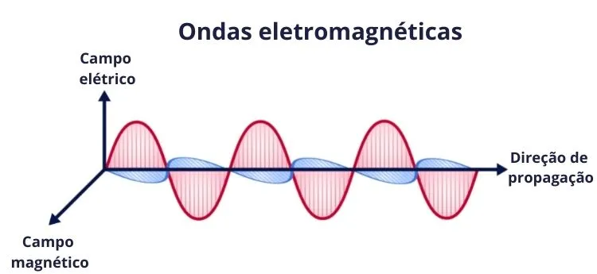

O que é Eletromagnetismo?
Michael Faraday (1791-1867) descobriu os efeitos elétricos produzidos pelo magnetismo. Através desses efeitos, chamados de indução eletromagnética, ele explicou a natureza e as propriedades dos campos magnéticos.
Faraday explicou que o campo magnético é produzido pelas cargas elétricas geradas a partir do atrito entre os corpos que, por sua vez, sofrem atração ou repulsão.
Alguns Exemplos
poppii

Exemplo 1:ONDAS ELETROMAGNETICAS
Exemplo 2:ELETROMAGNETISMO CAMPO MAGNÉTICA E ATRAÇÃO MAGNÉTICA
Leis do Eletromagnetismo
As leis do eletromagnetismo incluem a Lei de Coulomb, a Lei de Ampère, a Lei de Faraday da Indução Eletromagnética e a Lei de Gauss para o Campo Elétrico e o Campo Magnético. Essas leis desempenham um papel fundamental na compreensão do comportamento das cargas elétricas e campos magnéticos.
Aplicações do Eletromagnetismo
O eletromagnetismo é fundamental para nossa vida cotidiana e tem uma ampla gama de aplicações, incluindo eletricidade, eletrônica, telecomunicações, geração de energia, motores elétricos, dispositivos eletrônicos e muito mais.
RESUMO SOBRE
Não se tem ao certo a origem do magnetismo, diz uma lenda que um pastor de ovelhas da gria antiga fez a primeira observao das propriedades magnicas de uma pedra. o pastor possu um cajado com ponta de ferro, e cada vez que encostado na pedra seu cajado ficava preso por uma for.
o nascimento do eletromagnetismo se deu no sulo xix com a expericia do fico hans christian oesterd. ele notou que ao colocar uma bsola sobre uma corrente elrica a agulha da bsola desviava. outros ficos como joseph henry e heinrich lens tamb devem ser lembrados por contribui?es ao eletromagnetismo.
no planeta terra o polo norte magnico estlocalizado primo ao sul geogrico e o polo sul magnico ao norte para onde as linhas de induo convergem estlocalizado primo ao norte geogrico. o eletromagnetismo produzido por cargas elricas em movimento, duas cargas de mesmo sinal se repelem, e quando de sinais contrios se atraem. a for destas intera?es diretamente proporcional a sua quantidade de carga e inversamente proporcional ao quadrado da distcia que as separa.
a teoria eletromagnica muito usada na construo de geradores de energia elrica, dentre estes destacam-se os alternadores ou geradores de corrente alternada, que propiciam maior rendimento que os de corrente contua por n sofrerem perdas mediante atrito.
aplicao do eletromagnetismo no projeto
ao aproximar-se um de uma pilha observa-se uma variao em sua for eletromotriz, que a medida da energia fornecida a partir de cada unidade de carga elrica nela contida. essa alterao interrompida quando se imobiliza o e adquire sinal contrio quando este afastado. a partir dapercebe-se que os campos magnicos produzem correntes elricas em um circuito e que o sentido de seu fluxo tende a compensar a perturbao exterior, com a induo simultea de um campo magnico oposto ao inicial.
a corrente elrica que circula em um condutor gera um campo magnico associado que, como efeito derivado, induz no condutor uma corrente de sentido contrio ao da inicial. a utilizao da mola juntamente ao ime a pilha permitiu a transfercia de energia para a mola, permitindo simultaneamente que houvesse a locomoo da pilha por entre o eixo construo em formato de mola.
"Tópicos deste artigo"
1 - Mapa Mental: Eletromagnetismo
Mapa Mental: Eletromagnetismo"

Como calcular o eletromagnetismo
Φ = B.A.cosθ Onde B é a intensidade do campo magnético, A é a área da superfície e θ é o ângulo entre as linhas de campo magnético e o vetor normal. A unidade de fluxo magnético no Sistema Internacional é T.m² , que recebe o nome de weber, cujo símbolo é Wb.